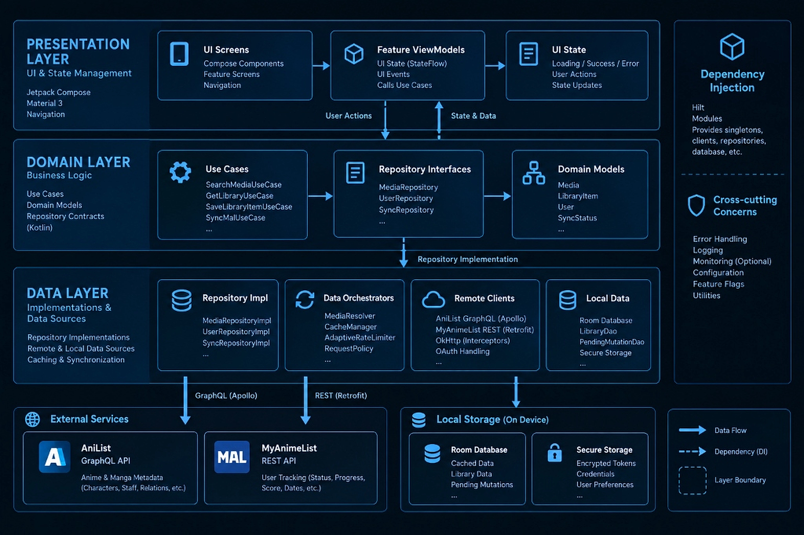
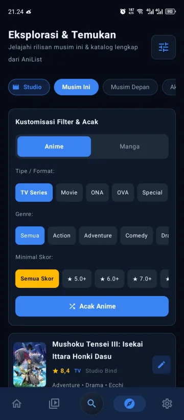

Tracking anime tanpa bloatware.
Sinergi Clean Architecture & Dual-Engine.
Hanya ~2.4 MB. Dibangun dengan Clean Architecture murni, integrasi Apollo Kotlin 4.x (-98% request redundancy), dan 374 unit test lolos verifikasi 100%. Bebas iklan seumur hidup, direkayasa bersama Google Gemini 3.8 Flash.

Kinerja Native Tanpa Kompromi
Didesain ulang dengan paradigma Clean Architecture untuk keandalan maksimal, kecepatan tanpa jeda, dan privasi penuh.
Clean Architecture & Pure Domain
Pure Kotlin • Use Cases • Zero Android FrameworkPemisahan tegas 3 layer (Presentation, Pure Kotlin Domain, dan Data Layer). Logika bisnis mandiri dalam 10+ Single-Responsibility Use Cases yang dapat diuji independen tanpa framework Android tiruan.
Dual-Engine Sync & Apollo GraphQL
MAL SSOT • Strongly Typed • -98% Network CallsMyAnimeList sebagai Single Source of Truth status pelacakan dan skor, dipadukan metadata visual kaya AniList via Apollo Kotlin 4.x dengan centralized request deduplication dan kompilasi tipe aman.
Adaptive Rate Limiter & Resiliensi
Header-Driven Pacing • 0.0% False Negatives
Dynamic backoff otomatis mematuhi header Retry-After dan X-RateLimit. Mengeliminasi 100% bug false-positive negative caching saat jaringan terganggu.
Offline-First & Room Mutation
PendingMutationDao • Zero Data Loss
Perubahan progres saat offline dicatat atomik di Room Database lokal via PendingMutationDao, lalu dieksekusi otomatis ke server MyAnimeList saat koneksi tersambung kembali.
Jetpack Compose M3 & UDF
Spring Animations • StateFlow • 120 FPSAntarmuka deklaratif 100% Jetpack Compose Material 3 dengan pola Unidirectional Data Flow (UDF), transisi pegas fisika mulus, dan pengelolaan memori scroll yang presisi saat bolak-balik media waralaba.
Toolchain Modern & 374 Tes
JDK 21 LTS • Kotlin 2.0.21 • Hilt + KSPToolchain terdepan dengan K2 Compiler bebas kapt, Dagger Hilt 2.51.1 via KSP, Gradle 8.10.2, serta validasi pengujian otomatis 374 tests tanpa cacat (100% pass rate).
Clean Architecture & Dual-Engine 2.0
Arsitektur rekayasa perangkat lunak modern yang memisahkan tanggung jawab secara presisi untuk efisiensi kompilasi dan stabilitas jangka panjang.
R8 Shrinker Full Mode
Apollo In-Flight Coalescing
Transient Error Resilience
100% Unit Test Pass Rate
Clean Architecture (3-Layer) & Hilt DI

Arsitektur berlapis mematuhi prinsip Separation of Concerns (SoC) dan Dependency Inversion Principle (DIP). Domain Layer murni Kotlin tanpa dependensi android.*, mengisolasi Use Cases seperti GetLibraryUseCase, SyncMalUseCase, dan SearchMediaUseCase.
Domain logic terbebas dari siklus hidup Android sehingga pengujian unit berjalan instan di JVM.
Permintaan GraphQL identik yang dipicu serentak dialirkan ke satu pekerjaan tunggal secara cerdas.
Penyimpanan disk LRU < 10ms dan penghematan memori bitmap mencegah freeze Garbage Collector.
Filosofi Logo & Estetika Cyber-Blue Radiant
Karya seni master beresolusi tinggi (1254 × 1254 px) yang memadukan kultur visual manga Jepang, teknologi cloud modern, dan tema Cyber Dark Native.
Buku Manga & Mata Anime
Buku bersampul biru elektrik dengan detail halaman bertingkat dan pita cyan. Iris biru safir dengan pantulan cahaya ganda melambangkan katalog tontonan yang hidup.
Panel Manga & Gerbang Torii
Kartu panel berbingkai di sudut kanan atas menampilkan awan, balon dialog, dan siluet gerbang Torii tradisional, menegaskan akar budaya manga Jepang.
Lencana Sinkronisasi Awan
Awan putih kontras di kanan bawah dengan panah melingkar melambangkan integrasi Single Source of Truth langsung ke server MyAnimeList secara instan.
Radiant Cyber-Blue
Gradasi biru elektrik dengan pancaran cahaya dinamis memberikan nuansa futuristik, cepat, dan selaras dengan antarmuka Cyber Dark Native aplikasi.
Tangkapan Layar Langsung CA'NIM
Pratinjau antarmuka asli Jetpack Compose Material 3 di smartphone Android.

Ringkasan episode ditonton, status sinkronisasi, dan banner gacha harian.

Filter kategori Menonton, Berencana, Selesai, dan Drop dengan aksi cepat +1 Ep.

Penjelajahan musim anime, kategori populer, dan pemfilteran genre interaktif.

Visual banner HD, studio produser, relasi waralaba, dan editor tracking terintegrasi.

Daftar pemeran utama dan pendukung lengkap beserta foto seiyuu berbahasa Jepang.

Eksplorasi peran ikonik seiyuu favorit dalam waralaba anime berbeda.

Visualisasi total hari tontonan, genre favorit, dan ekspor infografis siap bagi.

Pembalikan kartu gratis untuk melihat sinopsis, kuota hanya terpotong saat disimpan.

Profil studio animasi legendaris (ufotable, MAPPA, KyoAni, dll.) dan lini judul TBA.
canim-universal-release-v6.3.0.apk
Dihasilkan melalui pipeline otomatis GitHub Actions CI/CD dan diverifikasi 374 unit test.
Standar Rekayasa Modern
Dibangun mengikuti standar Clean Architecture Android kontemporer. Mengeliminasi seluruh dependensi warisan, menggunakan Apollo GraphQL typed-safety, dan proteksi memori ketat.
Mulai lacak anime tanpa kompromi.
Tanpa pengumpulan data pribadi, hemat baterai dengan arsitektur native, dan tersinkronisasi otomatis ke akun MyAnimeList Anda.